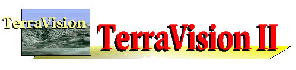

 |
These pages provide a reference guide for the TerraVision library, containing descriptions of the API function calls and data structures needed to develop new TerraVision applications.
API Overview:
The TerraVision library embodies the core functionality of the TerraVision system. It forms the basis for TerraVision applications, where for example a GUI is layered on top of it to form a stand-alone program, or it is embedded in a plug-in framework for a web browser.
The core capability may loosely be described as the visualization of three-dimensional, geographic datasets that are accessed from either local or remote sources. There are many options that control the rendering of the scenes, the specification of viewing parameters, the class of features to be depicted, etc. Multiple renderings may be created, and can either exist independently, or linked together so that changes in one are reflected in the others.
The set of services provided by the API can be partitioned into functional categories:
Initialization and Control of Visualization Threads Tileset/GeoSet Specification View Specification and Navigation Rendering Options Predefined/Automated Flight Paths Linking Views VRML Features Logging (net logging, tileset logging) GLX Interface OAA Interface Miscellaneous Operations
The library makes use of OpenGL to generate rendered scenes, and each rendering instance is a distinct thread of execution. Additionally, this library makes use of the services of several other utility libraries bundled with the TerraVision distribution, such as the "libglt.a" for programs incorporating OpenGL within an Xt/Motif context, and libtsm.a for managing access to geographical datasets. In some cases, functions of this API require arguments which are created by these other libraries. Those instances are noted below, however the APIs for these auxiliary libraries are described elsewhere.